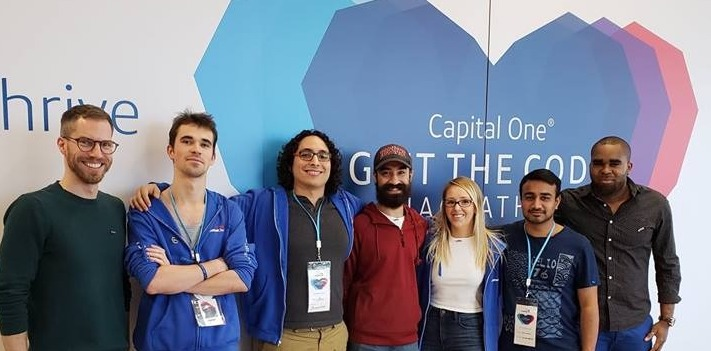

Last weekend marked my first hackathon, and I almost can't wait to do another.
With zero hackathon experience collectively, and having never worked together before, I wasn't sure what to expect. What my team delivered in 48hrs continues to impress.
Was I exhausted come Sunday? Yes. Was it worth it? YES. It pushed me out of my comfort zone. Suddenly, I was a Product Manager and Front-End hacker, because that's what our team needed.
Not only that, but I learned more in a weekend than I have on entire projects due to the sheer velocity, domain specific knowledge, and amazing collaboration of our team.

Learn
Movember Foundation Challenges
- How can we raise awareness for the impact of Movember initiatives - funded through the effort of fundraisers and donors - to the general public as well as to the individual fundraiser and donors?
- How can we engage fundraisers and donors year-round to ensure we have impact and can raise awareness for our causes beyond November?
- How can we collect, analyze, display, and utilize customer data to find ways to engage users in novel ways?
From our stakeholders, we heard that they wanted to bring attention to the other months, while maintaining the brand that had worked for them. There were also user insights, highlighting the importance of impact, which was critical for those who didn't have a personal connection to the cause. Users wanted to know where the funds were going, the impact here and globally. Lastly, we were provided with the available data, which was fairly comprehensive.
In closing, we asked what outcome they'd like to see one year for now - Diversified campaigns with increase in donations in other months of the year.
As a last validation, we conducted a lean heuristics analysis on the current website and mobile app, where the results confirmed stakeholder concerns. Information related to other causes and ways to raise funds were lost in Movember branding, required too many clicks to uncover, and there was no sense of impact.
Build
We wanted to tackle the core of the problem and reach the year objective, but we wanted to do it faster, and deliver something testable. The assumption we made to do so, was that donations were dependent on the awareness, campaigns, and motivation (through personal connection or impact). Therefore, we predicted that altering the awareness, campaigns, and/or impact, would result in a change in fundraiser and donor behaviour.
Our hypotheses
- By highlighting the other causes and ways to raise money, we will see an increase in the number of fundraisers and donations outside Movember.
- By using data and visualizations to highlight impact, we will see an increase in overall fundraisers started and an increase in number of second fundraisers by an individual (retention).
Fast forward through wireframing, concept testing with stakeholders, data viz-ing, prioritizing, iterating, and some delicious food... And you get to our solution:
- New information architecture to improve UX
- Brand development and sample iconography to promote awareness on other causes year-round
- Live data visualizations of impact and where funds go to engage users in new ways
- Personalized impact stats to engage, motivate, and retain fundraisers and donors
Live demo on *laptop* I'm front-end by hobby only, so full responsive was out of scope for the weekend.

Measure
Given that the end-to-end was 48hrs, there was no measure phase. However, the design intent was to test prior to implementation, validate the assumptions, and reduce implementation cost and waste (it is a charity after all).
For example, through user testing (a/b), it would be possible to determine a) if we were more successful in communicating the other causes and ways to raise money, b) if we were more successful in communicating impact, and c) if attitudes towards fundraising or donating change as a result. Going further, the modular design makes it possible to test if one data visualization proved more effective than others, and if that efficacy is significant enough to motivate those without a personal connection.
In the event that this proved true, the mvp could be as lean as few content updates and one data visualization.
...Learn
What would we do next time? For anyone considering a hackathon, here's a few takeaways from our retro.
- Have fun
- Know the rules of the game
- Anything you normally do, you will need to do faster
- Leverage previous work where possible
- Wear the right hat
A hackathon hat
My biggest takeaway, is that I should have left my consulting hat at home. I needed to change the way I thought, and put on a hackathon hat. I learned that the rules were different here, the solution needn't be your lean mvp. So, we likely should have spent less time in the problem space, as the goal is different - find a problem to solve (not necessarily the problem). Also, softer deliverables, like the ui and branding, are just nice to haves in this game - keep it focused on the tech and how to innovate it.
Something else I learned, is what it's like to go through a code merge and have my code break.
So, that's a new thing I can empathize with :)